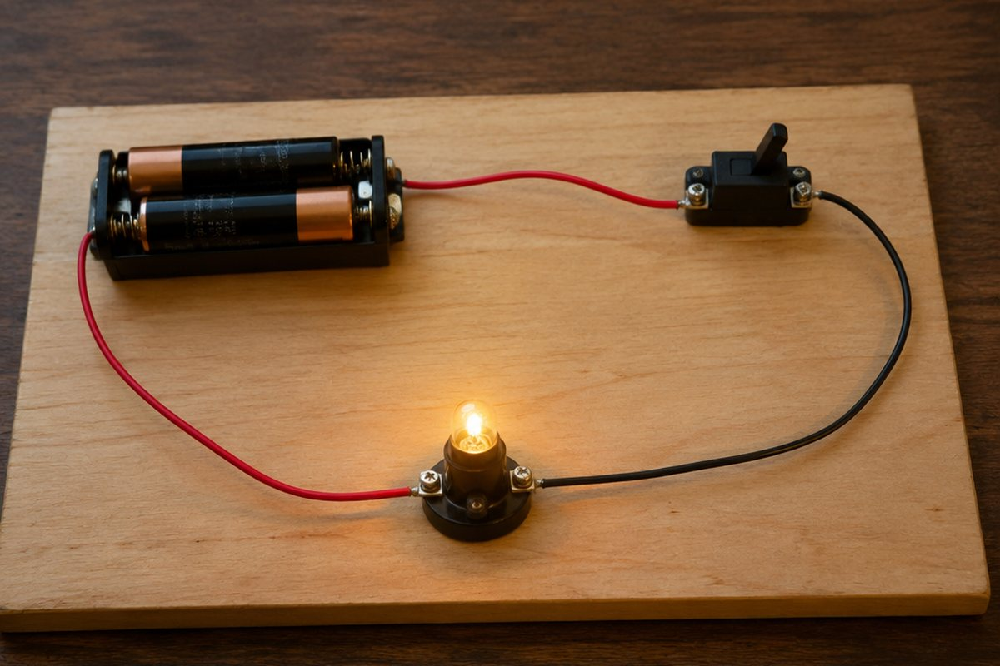

전구에 불이 켜지려면 어떻게 연결해야 할까?

스위치를 누르면 방에 불이 켜지고, 리모컨으로 텔레비전이 켜져요. 전기는 어떻게 흘러서 일을 할까요?
전기 회로 만들기
전지, 전선, 전구, 스위치 같은 전기 부품을 연결해 전기가 흐르도록 한 것을 '전기 회로'라고 해요.
전구에 불이 켜지려면 전구를 전지의 (+)극과 (-)극에 각각 연결해, 끊어진 곳 없이 하나의 길로 이어져야 해요. 스위치를 끄면 회로가 끊겨 불이 꺼져요.
전선 한쪽이 전지에서 빠지면 회로가 끊어져 전구에 불이 켜지지 않아요.
전구의 직렬연결과 병렬연결
전구 두 개 이상을 한 줄로 연결하는 것을 '직렬연결', 여러 갈래로 나누어 연결하는 것을 '병렬연결'이라고 해요.
전구를 병렬연결하면 직렬연결할 때보다 전구가 더 밝아요. 또 병렬연결에서는 전구 하나가 꺼져도 나머지 전구는 계속 켜져 있지만, 직렬연결에서는 하나가 꺼지면 나머지도 모두 꺼져요.
집 안의 전등과 전기 기구는 병렬연결되어 있어서 하나를 꺼도 다른 것은 켜져 있어요.
전자석
철심(쇠못)에 에나멜선을 여러 번 감고 전기를 흐르게 하면 철심이 자석이 돼요. 이것을 '전자석'이라고 해요.
전자석은 전기가 흐를 때만 자석이 되고, 전지를 여러 개 직렬로 연결하면 세기가 더 세져요. 또 전지의 극을 바꾸면 전자석의 N극과 S극도 바뀌어요.
고철 처리장의 기중기는 전자석으로 고철을 들어 올렸다가 전기를 끊어 내려놓아요.
전기를 안전하고 아껴 쓰기
젖은 손으로 전기 기구를 만지거나, 콘센트 하나에 플러그를 너무 많이 꽂으면 감전이나 화재가 일어날 수 있어 위험해요. 플러그를 뽑을 때는 전선이 아니라 플러그 머리를 잡아요.
전기를 만들려면 많은 자원이 들어요. 쓰지 않는 전등은 끄고, 사용하지 않는 기구의 플러그는 뽑고, 냉장고 문은 오래 열어 두지 않아요.
핵심 낱말
- 전기 회로
- 전기 부품을 연결해 전기가 흐르도록 한 것
- 직렬연결
- 전구나 전지를 한 줄로 연결하는 것
- 병렬연결
- 전구를 여러 갈래로 나누어 연결하는 것
- 전자석
- 전기가 흐를 때만 자석이 되는 것
- 감전
- 몸에 전기가 흘러 다치는 것
한 줄 정리
- 전기 부품이 끊김 없이 이어져야 전기 회로에 전기가 흘러요.
- 전구는 병렬연결이 직렬연결보다 밝고, 하나가 꺼져도 나머지가 켜져요.
- 전자석은 전기가 흐를 때만 자석이 되며, 전기는 안전하게 아껴 써야 해요.
학교 교육과정 연결
2015 개정 교육과정에서는 6학년에서 전구의 직렬연결·병렬연결을 배웠지만, 2022 개정 교육과정에서는 전구의 직렬·병렬연결을 다루지 않아요([6과15-02] 성취기준 적용 시 고려 사항). 이 단원의 전구 연결 비교 부분은 심화 내용이에요.
- [6과15-01] 전지와 전구, 전선을 연결하여 전구에 불을 켜보고, 불이 켜지는 전기 회로의 특징을 말할 수 있다.
- [6과15-03] 전자석을 만들어 전자석의 성질을 탐색하고 전자석이 사용되는 예를 조사할 수 있다.
- [6과15-04] 전기를 효율적이고 안전하게 사용하는 방법을 조사하여 실천 계획을 세우고 일상생활에서 실천할 수 있다.